GIS import¶
GIS import is a brand new Modelur feature, which allows you to import Shapefiles and GeoJSON files to SketchUp and transform 2D GIS data to a 3D model.
GIS import gives you the possibility to map GIS attributes to Modelur parameters.
For example you can map GIS attribute NUM_OF_STO to Modelur parameter Number of storeys. Modelur will then use the value from GIS attribute when generating Modelur Building objects for GIS layer.
Requirements¶
Set Geo-location¶
Your SketchUp model needs to have geolocation set before you can import GIS data. You can set the model's geolocation under File -> Geo-location in SketchUp.
Supported file types¶
You can import GIS data that are saved as GeoJSON (.geojson) or Shapefiles (.shp). Files need to be saved in WGS84 coordinate system.
Supported data types¶
Modelur supports the following GIS data types: - polygons (can be imported as Modelur Buildings, Modelur Complex Buildings, Modelur City Blocks or Simple Building Volumes) - points (can be imported as Trees, Waste Bins or Terrain) - polylines (can be imported as Metro or Underground Pipes)
Usage¶
Open your model in Sketchup¶
Open your .skp file in SketchUp. If geolocation is not set, set it under File -> Geo-location in SketchUp.
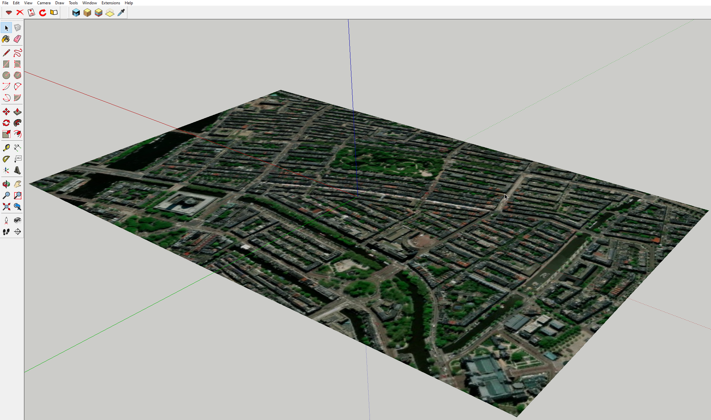
Open GIS Data Import window¶
Initialize Modelur and go to File -> Import GIS Data ... to open GIS Data Import window.
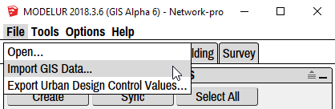
Gis Data import window will open:
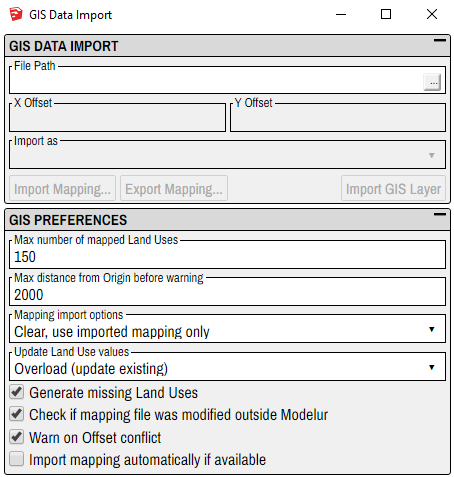
Here you will import your .shp or .geojson file and set preferences (see GIS Preferences section).
Import GeoJson or Shapefile¶
Click the ... button at the right side of the File Path field and select .shp or .geojson file that you want to import.
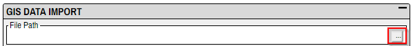
Offset¶
Determine the offset for your model if needed. The unit for offset is the same as the currently chosen unit in Modelur (meters or feet).
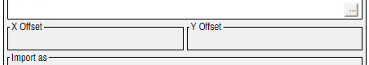
Import as¶
Set of choices that will be presented in this dropdown depends on the type of data that you imported from your .shp or .geojson file.
- If the file contains polygons, you can import them as Modelur Buildings, Modelur Complex Buildings, Modelur City Blocks or Simple Building Volumes.
- If the file contains points, they can be imported as Trees, Waste Bins or Terrain.
- If the file contains polylines, they can be imported as Metro or Underground Pipes.
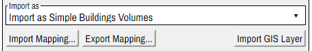
Import Mapping...¶
By clicking this button you will import parameter mapping from a mapping (.mjson) file. Parameter mapping will be shown in the Parameter Mapping section.
Export Mapping...¶
By clicking this button you will export current parameter mapping (from Parameter Mapping section) to a mapping (.mjson) file.
Import GIS layer¶
After you set the mapping in the Parameter Mapping section, you use this button. This will generate appropriate Modelur objects and add them to a new SketchUp layer to your model.
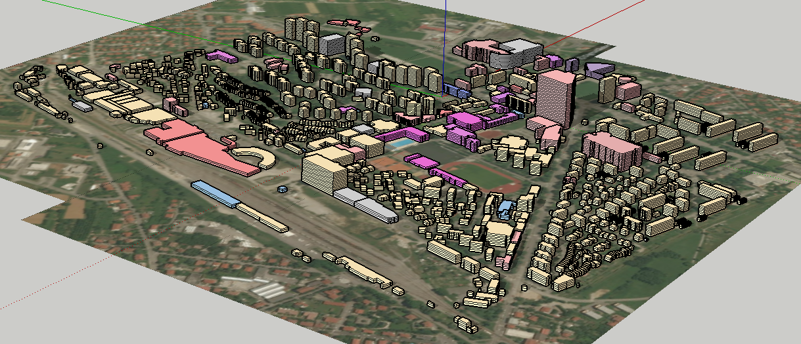
Parameter Mapping¶
Here you connect (map) Modelur parameters with GIS attributes. Modelur will use value from mapped GIS attribute for a parameter value. For example, Modelur will use value from GIS attribute H1 as Building Height parameter value when creating Modelur Buildings for GIS layer.
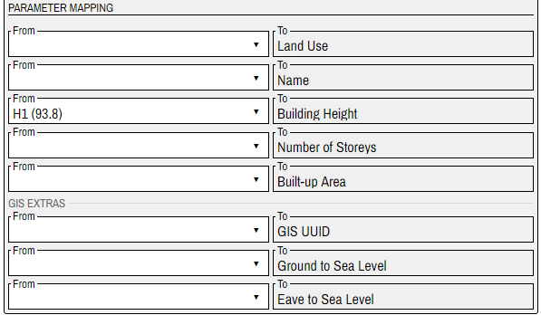
Options in From dropdowns consist of GIS attribute name and a randomly chosen attribute value (e.g. H1 (93.8)). We included attribute value to give you an example of what each GIS attribute contains. Hopefully, this will make it easier for you to map attributes to parameters.
Modelur parameters listed on the right (To dropdowns) depend on the type of data in your .shp/.geojson file and on the option you selected in the Import as dropdown. For example, if you import polygons as Modelur Buildings, you will see the parameters Land Use, Name, Building Height etc. If you import points as Trees, you will see the parameters Tree Height, Tree Species etc.
You map Modelur parameter to GIS attribute by selecting the GIS attribute from dropdown on the left (From area). Image 1.9 shows us choosing GIS attribute Soortnaam to map to Modelur parameter Tree Species.
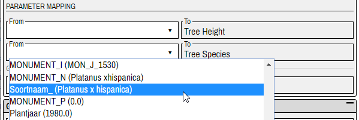
Some Modelur parameters (e.g Number of Storeys) can remain unmapped because Modelur can use default values to create objects for GIS layer. Those parameters that currently do not have default values (and can not remain unmapped) will be listed in the GIS Non-mapped Parameter Values area. See GIS Non-mapped Parameter Values section for more information.
Some parameters, for example Land Use, Tree Species and Pipe Color, offer additional mapping possibilities. See Additional Parameter Mapping section for more information.
GIS Extras¶
This section contains Modelur parameters that are not used for creating Modelur objects (e.g. Modelur Buildings). These parameters just contain some additional information used for placing the objects on the model. For example Ground to Sea Level for Buildings.
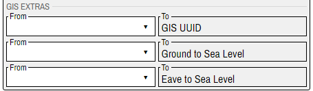
Additional Parameter Mapping¶
Some parameters, for example Land Use, Tree Species and Pipe Color, offer additional mapping possibilities.
When you map such parameter to GIS attribute, additional mapping area will appear under Parameter Mapping area. There you can map for example Tree Species values from GIS to Tree Species values from Modelur.
Let us look at Land Use additional parameter mapping example:
Land Use Mapping¶
Land Use Mapping area appears when you map Land Use Modelur parameter.
On the left side (From) are listed (unique) values of the GIS attribute that maps to Modelur Land Use parameter. On the right side (To) are dropdowns containing all Modelur Land Use types.
You map GIS Land Uses to Modelur Land Uses by selecting a Land Use type from the To dropdown. Image 1.11 shows us choosing Modelur Land Use Residential to map to GIS Land Use 1122100 - Flat in a multi-apartment building.
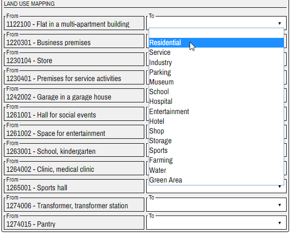
You can map different GIS Land Uses to the same Modelur Land Use.
GIS Non-mapped Parameter Values¶
While some Modelur parameters can remain unmapped (because Modelur can use default values), some can not. For example, all Metro parameters must be mapped.
The parameters that can not remain unmapped and that are not (yet) mapped in the Parameter Mapping area, will be listed in GIS Non-mapped Parameter Values area.
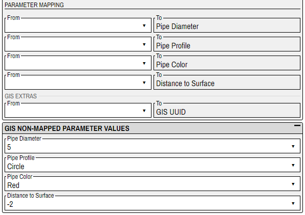
If you map the parameters in the Parameter Mapping area, they will disappear from GIS Non-mapped Parameter Values area.
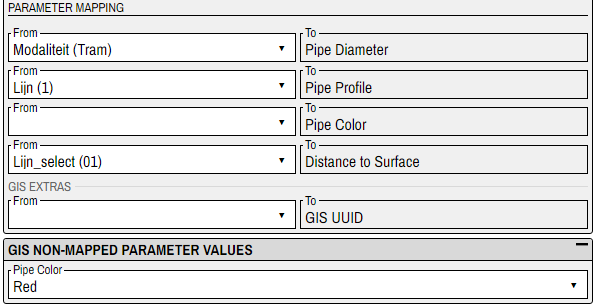
Dropdowns in the GIS Non-mapped Parameter Values area contain actual values that are available for certain parameter. The chosen value will be used for all objects in GIS layer.
GIS Preferences¶
Here you set how Modelur will perform certain GIS related functions.
If you don't see the options, click on the square icon on the right of the GIS Preferences tittle area. This will expand GIS Preferences area.
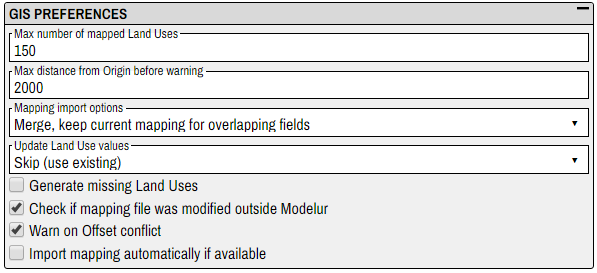
Max number of mapped Land Uses¶
Land Use mapper area (see Land Use Mapping section) is generated with unique values of the GIS attribute that maps to Land Use Modelur parameter.
You might accidentally choose a GIS attribute with e.g. 1000 or more fields. Then the generation of Land Use Mapper will take a long time and can even break the program.
You can prevent such errors by setting the limit on Land Use mapper size. Then the Land Use Mapper will contain only the Max number of mapped Land Uses fields.
Max distance from Origin before warning¶
Here you can set max allowed distance between model’s geolocation and the geolocation of the GIS file you imported.
Modelur will not prevent you from importing GIS file that exceeds the distance set here, but will show a warning to alert you.
Mapping import options¶
When importing saved mapping file (.mjson) you can choose between following options:
1. Clear, use imported mapping only¶
All the mapping fields in the Parameter Mapping area will be cleared and filled with values from the imported mapping file.
2. Merge, keep imported mapping for overlapping fields¶
Values from the imported mapping file will replace values from the Parameter Mapping area. Those fields in the Parameter Mapping area that are not defined in imported file, will remain unchanged.
3. Merge, keep current mapping for overlapping fields¶
Values from the Parameter Mapping area will remain unchanged. Only those fields that do not have a value set will be filled with values from imported mapping file.
Update Land Use values¶
If Land Uses, defined in mapping file you will import, differ from the same named Land Uses from model, you have two options:
1. Skip (use existing)¶
Use Land Uses defined in model.
2. Overload (update existing)¶
Update model Land Uses with specification from mapping file.
Generate missing Land Uses¶
When you import mapping file, it can happen that the file contains Land Use types that your model does not contain. In that case, Generate missing Land Uses option becomes important.
If checked, Modelur will add Land Uses from the mapping file to the model. If not, it will use just Land Uses from the model. Fields that use Land Uses from the mapping file will remain empty.
Check if mapping file was modified outside Modelur¶
When you click the Export Mapping... button, you generate a mapping file that can be imported to other Modelur instances or used later.
It is highly recommended not to edit the mapping file outside Modelur GIS Import Interface. Otherwise the file form can become corrupted which can cause trouble.
If you choose this option, Modelur will check if the file was edited outside Modelur and warn you if that is true.
Warn on Offset conflict¶
If checked, Modelur will warn you when mapping file offset differs from model offset.
Import mapping automatically if available¶
If you select this option, Modelur will look for a corresponding mapping file when importing the GIS file (Modelur will look in the folder where GIS file is located for a mapping file with the same name as GIS file).
If the corresponding mapping file is found, it will be automatically imported.